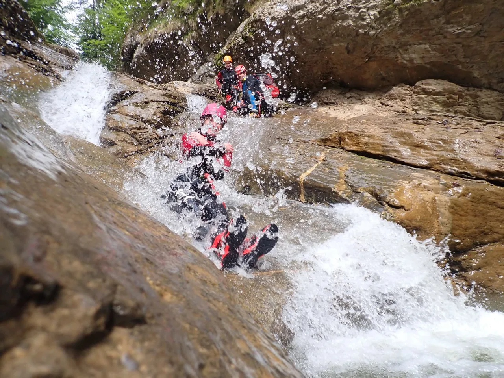
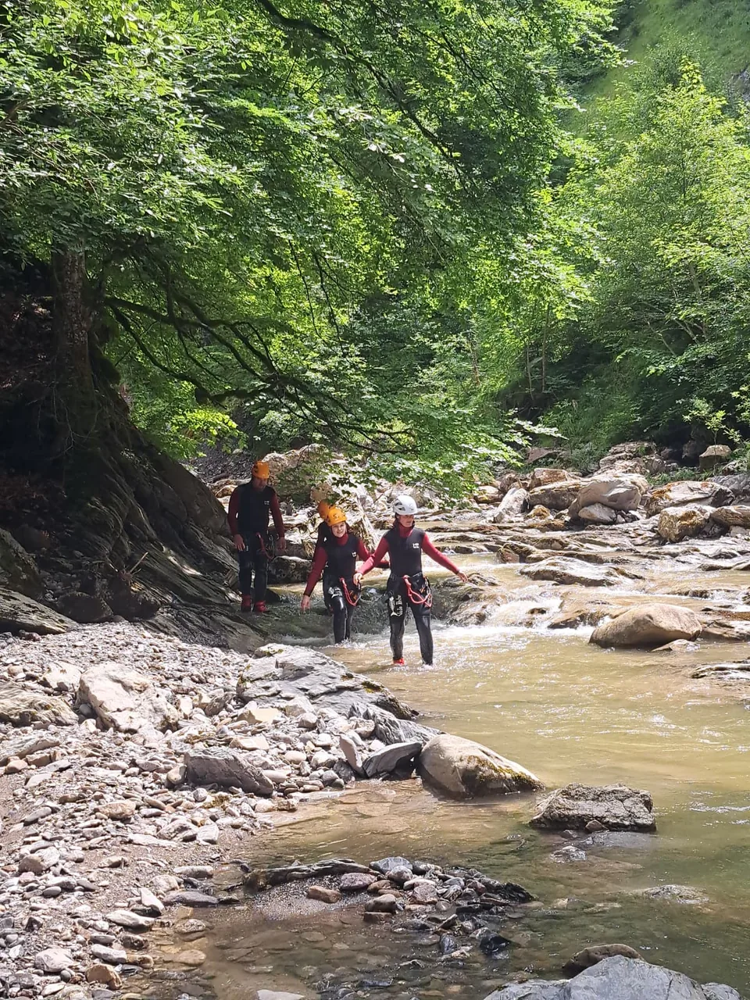
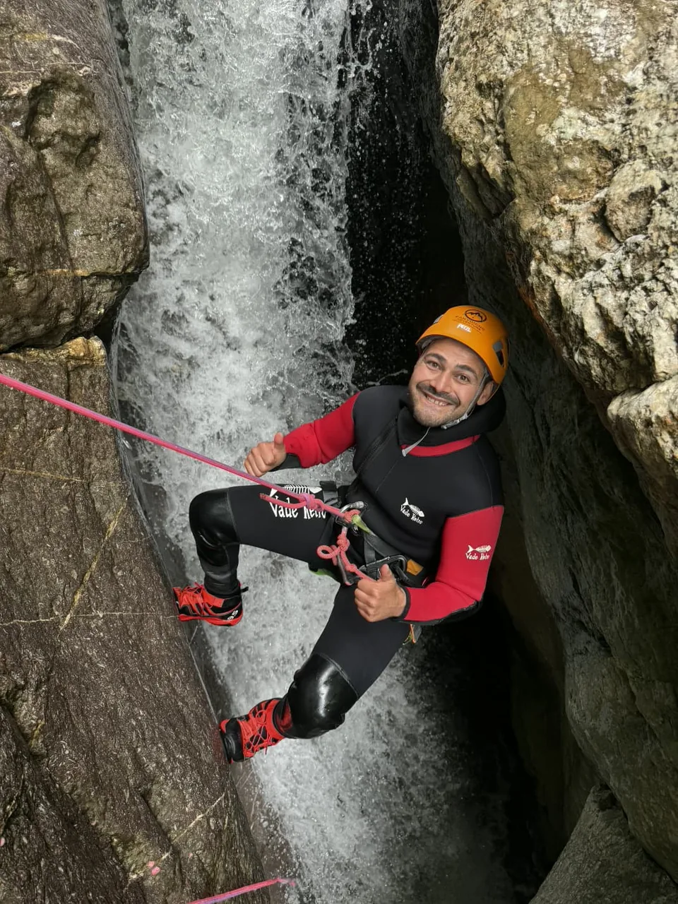
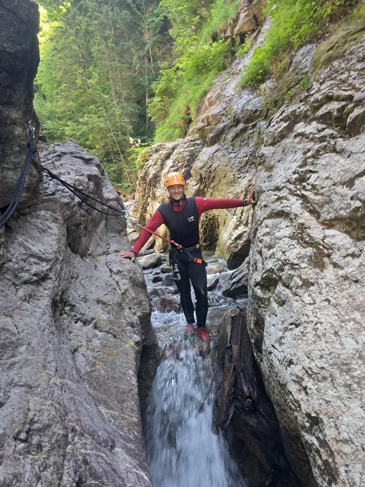

Kurzes Reel aus der Schlucht
Das Video läuft bewusst nicht vollflächig im Hintergrund, sondern als fokussiertes Beweismedium neben dem Text.
Wenn du konkret wissen willst, ob die Starzlachklamm zu dir passt, findest du hier den kompletten Überblick: Charakter der Tour, Schwierigkeit, Ablauf, Voraussetzungen, Packliste, lokale Orientierung und am Ende eine klar markierte Empfehlung für die Buchung.

Das Video läuft bewusst nicht vollflächig im Hintergrund, sondern als fokussiertes Beweismedium neben dem Text.
Für viele Suchende ist nicht der schönste Werbesatz entscheidend, sondern eine schnelle und ehrliche Antwort auf drei Punkte: Zeit, Anforderungen und Abenteuer-Level.
Viele Anfragen scheitern nicht an Fitness, sondern an unklaren Erwartungen. Die Starzlachklamm ist stark, weil sie Abenteuer vermittelt, ohne sofort in ein extremes Profil zu kippen.
Der Ablauf ist einer der wichtigsten Vertrauensfaktoren. Wer weiß, was als Nächstes passiert, bewertet die Tour realistischer und klickt später auch mit mehr Sicherheit weiter.
Vor dem Start stehen Treffpunkt, kurzer Check-in und das Einordnen der Gruppe. Gute Anbieter schaffen hier kein Stressgefühl, sondern einen klaren Übergang vom Parkplatz zur Tour.
Neopren, Helm und Gurt werden angepasst. Danach folgt die entscheidende Erklärung: Wie bewegst du dich, wie funktioniert das Abseilen, was ist freiwillig, und wie reagierst du auf Ansagen?
Schon vor den spannendsten Passagen zeigt sich, ob du dich in der Umgebung wohlfühlst. Wasser, Fels, Temperatur und Enge sind keine Nebensache, sondern Teil des Erlebnisses.
Rutschen, Abseilen, Abklettern, kurze Schwimm- oder Gehpunkte: Genau hier entsteht das Gefühl, das Menschen mit „Canyoning Starzlachklamm“ verbinden. Gute Führung macht daraus einen flüssigen Rhythmus statt Einzelhürden.
Am Ende zählt nicht nur, dass die Tour geschafft ist, sondern wie geordnet der Abschluss wirkt. Wer sauber aussteigt, versteht im Rückblick viel besser, ob diese Tour der richtige Einstieg oder schon der nächste Schritt war.



Die Schlucht ist nicht deshalb spannend, weil jede Passage maximal hoch oder wild wäre. Spannend ist, wie dicht das Erlebnis wirkt. Die Felsen rücken zusammen, das Wasser führt, und mit jedem Schritt verändert sich der Raum. Das schafft eine Intensität, die auch ohne extreme Zahlen trägt.
Gerade für Suchende im Allgäu ist das wichtig. Viele wollen eine Tour, die echt aussieht und sich nicht wie ein symbolischer „Schnupperkurs“ anfühlt. Gleichzeitig muss sie aber erreichbar bleiben. Die Starzlachklamm liegt genau in diesem Bereich: ernst genug, um Eindruck zu machen, und offen genug, um nicht nur Extrem-Sportler anzusprechen.
Deshalb lohnt sich die Kombination aus Erlebnistext und Logistik. Wer nur Bilder sieht, unterschätzt den Ablauf. Wer nur Fakten liest, verpasst das Gefühl. Die stärkste Seite verbindet beides.
„Alles ganz easy“ hilft niemandem. Die bessere Aussage lautet: Die Tour ist für viele Menschen machbar, wenn sie schwimmen können, Anweisungen annehmen und mit Wasser, Kälte und Bewegung im Fels klarkommen. Genau mit dieser Haltung solltest du die Starzlachklamm betrachten.
Was du mitnehmen solltest, was gestellt wird und warum die richtige Basis-Ausrüstung unnötigen Stress verhindert.
Zur Canyoning-PacklisteTreffpunkt, Orientierung, Parken, Zeitfenster und der Kontext, in dem Wetter und Wasserstand relevant werden.
Zu Anfahrt und SaisonFür alle konkreten Einzelpunkte: Dauer, Kleidung, Alter, Sprünge, Vorkenntnisse, Fotos, Regen, Treffpunkt und mehr.
Zur FAQ-SammlungDie große FAQ liegt auf einer eigenen Seite. Hier stehen nur die Fragen, die vor einer Tourentscheidung am häufigsten auftauchen.
Meist solltest du mit einem halben Tag rechnen. Dazu gehören Ankommen, Einweisung, Ausrüstung, Zustieg, die eigentliche Schlucht und der Rückweg.
Technische Vorkenntnisse sind für viele Angebote nicht nötig. Wichtiger sind gute Schwimmkenntnisse, ruhiges Verhalten im Wasser und die Bereitschaft, Anweisungen umzusetzen.
Ja, oft schon. Aber „für Anfänger geeignet“ heißt nicht automatisch bequem. Kälte, Enge, Wasser und Bewegung im Fels bleiben reale Faktoren.
Nein. Gute Anbieter arbeiten mit Alternativen und erklären vorab, was optional ist und wo andere Linien möglich sind.
Typisch sind Badebekleidung, Handtuch, eventuell etwas für danach und je nach Anbieter Hinweise zu Schuhwerk oder Wechselwäsche. Die komplette Packliste findest du auf der eigenen Seite.
Vor allem im wärmeren Teil des Jahres. Der konkrete Zeitraum hängt von Angebot, Bedingungen und Wasserführung ab. Die Übersichtsseite zu Anfahrt und Saison ordnet das genauer ein.
Der stärkste Inhalt rund um Canyoning Starzlachklamm ist nicht der mit den lautesten Superlativen, sondern der, der Unsicherheit abbaut.Leitgedanke dieser Seite
Empfehlung
Die Buchung erfolgt auf der Partnerseite von BlueRiver. Die Empfehlung steht absichtlich erst hier, nachdem Charakter, Anforderungen und Ablauf der Starzlachklamm sauber erklärt wurden.
Transparenzhinweis: Die Website selbst ist kein Veranstalter und verarbeitet keine Buchung.